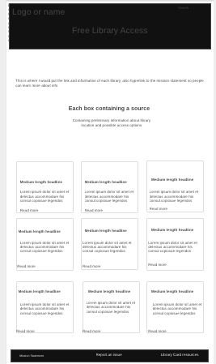
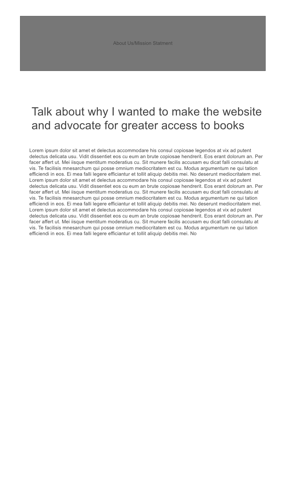
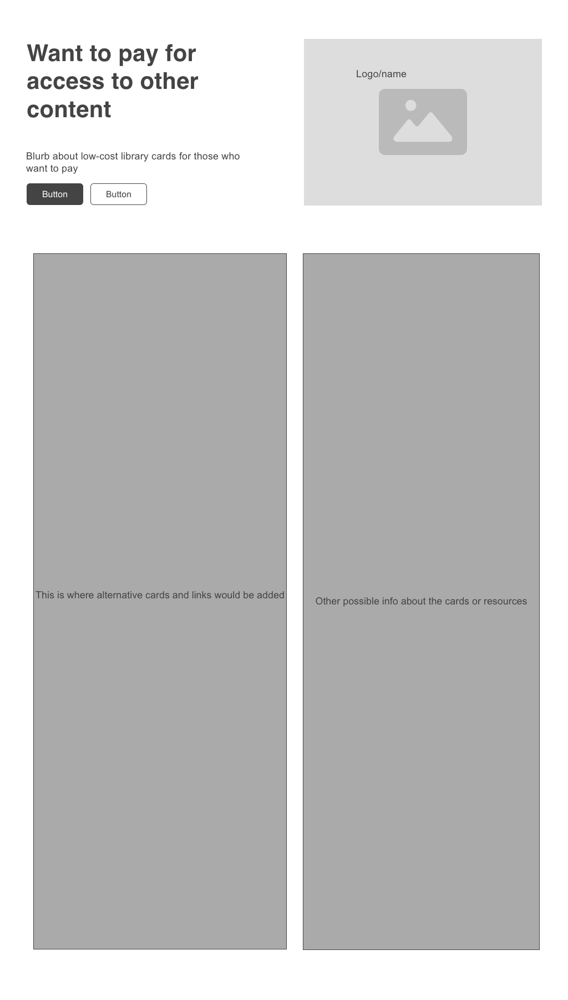

The advantages of sketching wireframes over using wireframe software are speed, flexibility, and limited distractions.
The disadvantages are duplicate work, low-fidelity, non-interactive, no version control or standardization, limited collaboration, and finally, being ugly.
Wireframing digitally would work best for me because I am really bad at sketching out my thoughts because I get stuck on how ugly it looks. I have never been confident in my drawing skills, and I think I will have more control and ultimately be happier with the outcome if it is digitally created.
This is the homepage of my website. Please note that the website wireframes.cc would not download the png correctly and kept scrambling my design each and every time I tried to download it, so this is a screenshot I converted to png, hence the horrible image quality. Not sure why the website was being a hater
This is the first subpage of my website.
This is the second subpage of my website.
This is the third subpage of my website.
